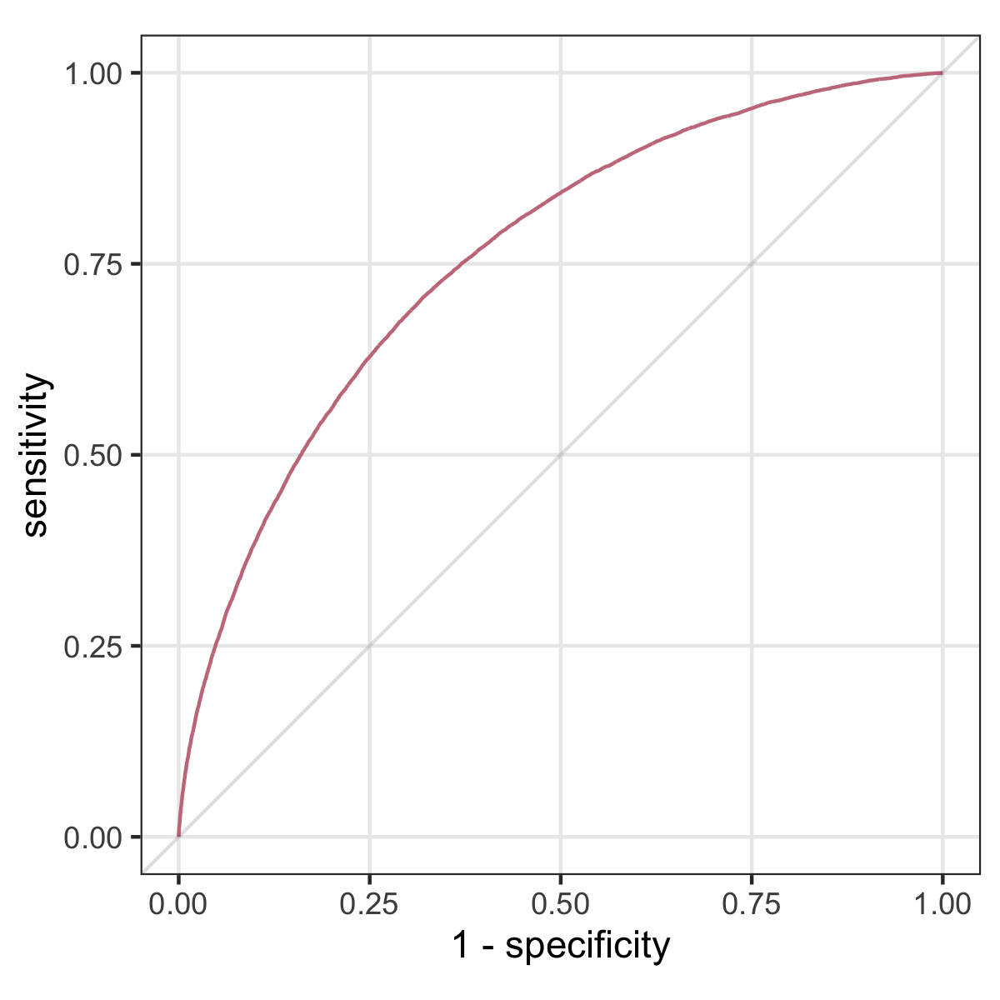
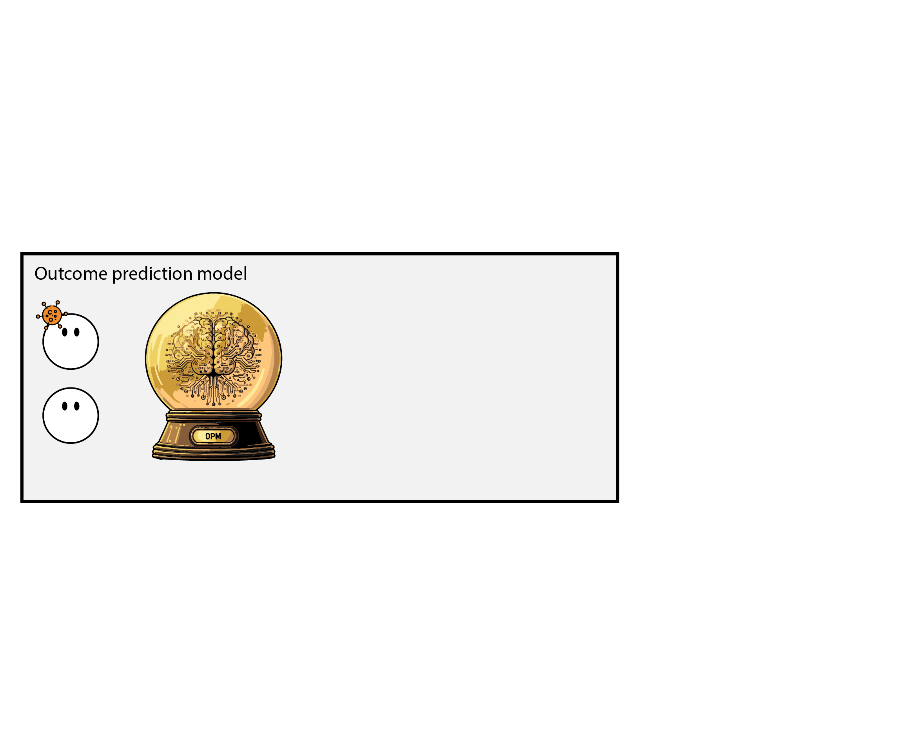
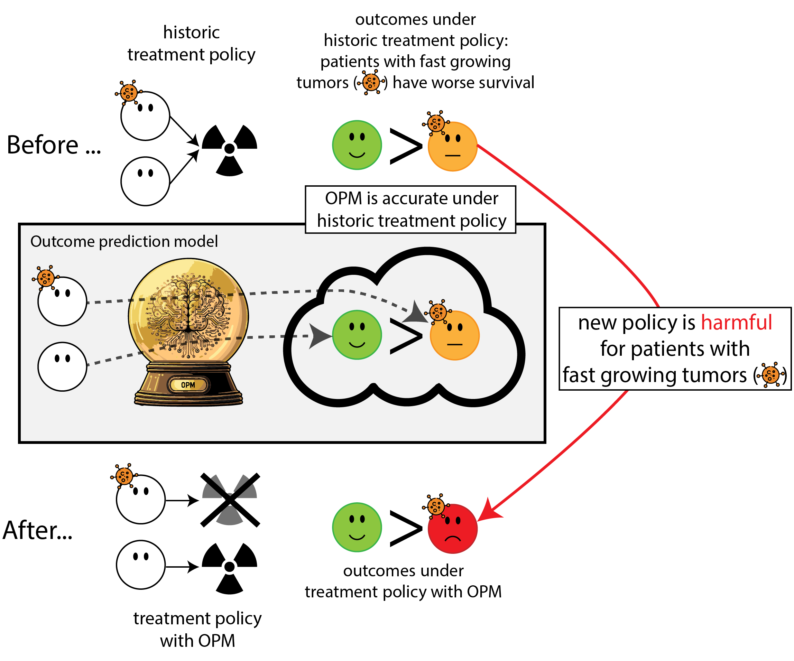
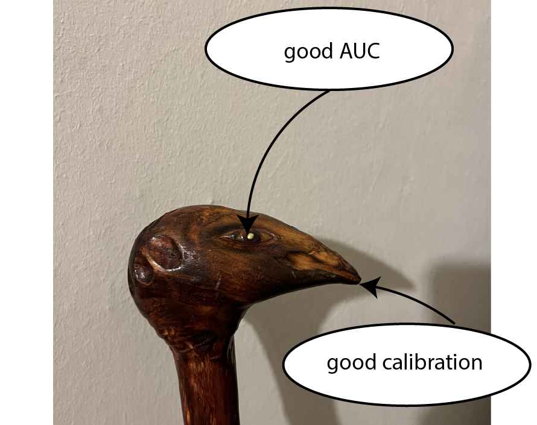
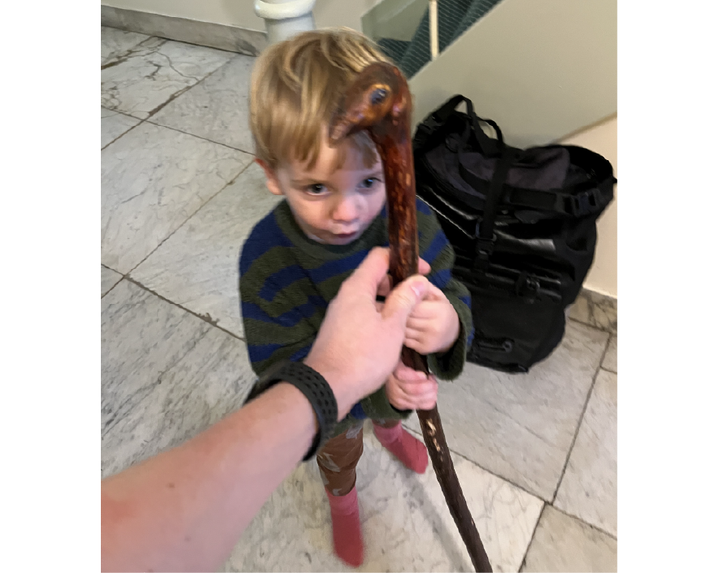
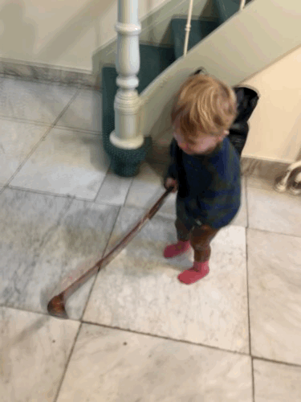
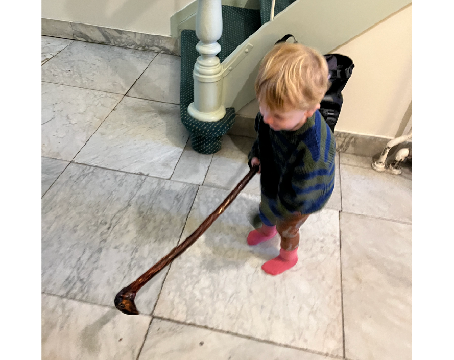

Aligning development, deployment and monitoring for AI: a causal perspective
MLHC pre-conference workshop 2025
Department of Data Science Methods, Julius Center, University Medical Center Utrecht
2025-08-14
Much of AI is ‘predict, predict, predict!’
- from an ECG, predict presence of heart failure (typically diagnosed with cardiac echo)
- using medical information from EHR, predict 10-year heart attack risk
Predictive performance measures
- sensitivity, specificity
- AUC
- accuracy
- calibration

Predict presence of heart failure from ECG (Yao et al. 2021)
- prediction: structural heart disease
- intervention: refer patient for cardiac echo
- outcome: diagnosis of heart failure on echo
- outcome (impact): reduce preventable early cardiac death / morbidity
10 year heart attack risk (Hippisley-Cox et al. 2024)
- prediction: heart attack in 10 years
- intervention: prescribe cholesterol lowering medication
- outcome: heart attack
- outcome (impact): reduce heart attacks
Predictive performance vs impact
predictive performance
- sensitivity, specificity
- AUC
- accuracy
- calibration
healthcare impact
- interventions (medical decisions)
- patient outcomes
- the hope is: better predictive performance \(\implies\) better impact
- unfortunately, this is not automatically the case
When accurate prediction models yield harmful self-fulfilling prophecies (Van Amsterdam et al. 2025)




What happened here? 18
- had a ‘good’ model, got a bad policy
- model predicted outcome (survival) under historic treatment policy (always radiation)
- did not predict what outcomes would be under alternative policy (no radiation)
- in this case, unmodeled treatment effect heterogeneity (aka treatment effect modification, interation, differing conditional average treatment effects)
Let’s monitor the AI model for performance over time

What happened in monitoring?
- the model re-inforced its own predictions (self-fulfilling prophecy)
- took a measure of predictive performance (AUC)
- mistook it for a measure of (good) impact
- many potential examples (e.g. ICU stop treatment (Balcarcel et al. 2025), others (Center n.d.))
Prediction model: walking stick
Data Scientist are concerned with optimizing predictive performance

Health care provider: stick user
The healthcare provider uses the prediction model for decision making

Health care provider + stick = policy
This combination leads to a new policy, which may yield unexpected results


Another way: prediction under intervention
When predicting an outcome to support decisions regarding an intervention,
this prediction needs a clear relationship with the targeted intervention (van Amsterdam et al. 2024)
Hilden and Habbema on prognosis (Hilden and Habbema 1987)
“Prognosis cannot be divorced from contemplated medical action, nor from action to be taken by the patient in response to prognostication.”
- not: what’s risk of heart attack given age and cholesterol,
- but: what’s risk of heart attack given age and cholesterol, if we were not to give cholesterol lowering medication (vs. if we would)
- may sound like \(1+1=2\) but often not done; e.g. in the development data of Qrisk3, many patients already underwent cholesterol lowering medication (Peek, Sperrin, and van Staa 2017)
Prediction under hypothetical intervention incorporates effects of treatment in its predictions
- estimates the expected outcome \(Y\)
- if we were to give treatment \(T\) to patient with features \(X\)
- a.k.a. ‘counterfactual prediction’
- can predict outcomes under multiple treatments, where one treatment may be ‘no (additional) treatment / standard treatment’
How to build prediction under intervention models?
- in its simplest form, can be just like fitting any other predictive model, as long as causal identifyability assumptions are fulfilled:
- unconfoundedness (no hidden variables causing both the intervention and the outcome)
- positivity, consistency
- these hold by design in Randomized Controlled Trials (RCT)
- RCTs are in that sense ideal (e.g. Kent et al. 2020), but:
- typically limited sample size
- may not have measured right information (e.g. imaging markers, new biomarkers, full-EHR)
- trial participants may not be representative of the target population of use (e.g. Lewis et al. 2003)
- can emulate RCTs with non-experimental (observational) data using a causal inference framework, e.g. using target trial emulation
Benefits of prediction under intervention
- policy rule: if expected outcome under treatment \(A\) is better than under treatment \(B\) (potentially by a certain margin), give treatment \(A\), otherwise \(B\)
- as opposed to other prediction models, this policy has foreseable positive impact on health outcomes
Benefits of prediction under intervention
- policy rule: if expected outcome under treatment \(A\) is better than under treatment \(B\) (potentially by a certain margin), give treatment \(A\), otherwise \(B\)
- as opposed to other prediction models, this policy has foreseable positive impact on health outcomes
- as a ‘bonus’, these models have stable calibration under shifts in policy that depend on the models’ features (e.g. Feng et al. 2024)
Measuring pre- and post-deployment
| pre-deploy | deployment study | ||
|---|---|---|---|
| metric | |||
| model | discrimination (AUC) | ✅ | |
| calibration | ✅ | ||
| health system | interventions | ✅ | |
| patient outcomes | ✅ |
Legend
🔁 changes ✅ stable 🔻 worsens
Measuring pre- and post-deployment
| pre-deploy | post-deploy | ||
|---|---|---|---|
| metric | |||
| model | discrimination (AUC) | ✅ | 🔁 |
| calibration | ✅ | 🔻 | |
| health system | interventions | ✅ | 🔁 |
| patient outcomes | ✅ | 🔁 |
Legend
🔁 changes ✅ stable 🔻 worsens
- for ‘non-causal’ prognosis prediction models that don’t factor in treatment decisions:
- AUC will change, calibration will worsen as distribution changes
- interventions and patient outcomes may change in unforeseen ways
Measuring pre- and post-deployment
| pre-deploy | ‘non-causal’ | ‘causal’ | ||
|---|---|---|---|---|
| metric | ||||
| model | discrimination (AUC) | ✅ | 🔁 | 🔁 |
| calibration | ✅ | 🔻 | ✅ | |
| health system | interventions | ✅ | 🔁 | 📈 |
| patient outcomes | ✅ | 🔁 | 📈 |
Legend
🔁 changes ✅ stable 🔻 worsens 📈 changes in expected way
- for prediction under intervention model
- calibration preserved under shifts in policy conditional on the model’s features
- interventions and outcomes change in foreseeable ways (under assumption on policy)
Outlook
Current status
- reporting guidelines (e.g. TRIPOD+AI (Collins et al. 2024)) do not require a clear enoough description of relation between prediction and treatment (“Prognostic Models for Decision Support Need to Report Their Targeted Treatments and the Expected Changes in Treatment Decisions” 2024)
- some acceptance criteria lists even allow for harmful self-fulfilling prophecies (Kattan et al. 2016)
- EMA and FDA are developing monitoring guidelines, mostly emphasis on predictive performance, but good performance \(\neq\) postive impact
Takeaways
- when predicting prognosis, need well defined relation between prediction and potential treatment decisions
- in particular, prediction under intervention has the advantages of:
- clear relationship between model performance and value for decision making
- stable calibration under shifts in treatment policy, conditional on the model’s features
- these models need unconfoundedness, so either
- develop using RCT data
- use observational causal inference
- evaluate and monitor AI based on what we care about: impact on healthcare
References
Amsterdam, W.A. C. van, Giovanni Cinà, Vanessa Didelez, Ruth H. Keogh, Niels Peek, Matthew Sperrin, Andrew J. Vickers, Nan van Geloven, and Uri Shalit. 2024. “Prognostic Models for Decision Support Need to Report Their Targeted Treatments and the Expected Changes in Treatment Decisions [Rapid Response].” BMJ, May. https://doi.org/10.1136/bmj-2023-078378/rr-1.
Balcarcel, Daniel R, Sanjiv D Mehta, Celeste G Dixon, Charlotte Z Woods-Hill, Ewan C Goligher, Wouter A C Van Amsterdam, and Nadir Yehya. 2025. “Feedback Loops in Intensive Care Unit Prognostic Models: An Under-Recognised Threat to Clinical Validity.” The Lancet Digital Health, July, 100880. https://doi.org/10.1016/j.landig.2025.100880.
Center, Science Media. n.d. “Expert Reaction to Study Suggesting Potential Patient Harms Associated with Use of AI Medical Outcome-Prediction Models | Science Media Centre.” Accessed August 12, 2025. https://www.sciencemediacentre.org/expert-reaction-to-study-suggesting-potential-patient-harms-associated-with-use-of-ai-medical-outcome-prediction-models/.
Collins, Gary S., Karel G. M. Moons, Paula Dhiman, Richard D. Riley, Andrew L. Beam, Ben Van Calster, Marzyeh Ghassemi, et al. 2024. “TRIPOD+AI Statement: Updated Guidance for Reporting Clinical Prediction Models That Use Regression or Machine Learning Methods.” BMJ 385 (April): e078378. https://doi.org/10.1136/bmj-2023-078378.
Feng, Jean, Alexej Gossmann, Gene A. Pennello, Nicholas Petrick, Berkman Sahiner, and Romain Pirracchio. 2024. “Monitoring Machine Learning-Based Risk Prediction Algorithms in the Presence of Performativity.” In Proceedings of The 27th International Conference on Artificial Intelligence and Statistics, 919–27. PMLR. https://proceedings.mlr.press/v238/feng24b.html.
Hilden, Jørgen, and J. Dik F. Habbema. 1987. “Prognosis in Medicine: An Analysis of Its Meaning and Rôles.” Theoretical Medicine 8 (3): 349–65. https://doi.org/10.1007/BF00489469.
Hippisley-Cox, Julia, Carol A. C. Coupland, Mona Bafadhel, Richard E. K. Russell, Aziz Sheikh, Peter Brindle, and Keith M. Channon. 2024. “Development and Validation of a New Algorithm for Improved Cardiovascular Risk Prediction.” Nature Medicine, April. https://doi.org/10.1038/s41591-024-02905-y.
Kattan, Michael W., Kenneth R. Hess, Mahul B. Amin, Ying Lu, Karl G. M. Moons, Jeffrey E. Gershenwald, Phyllis A. Gimotty, et al. 2016. “American Joint Committee on Cancer Acceptance Criteria for Inclusion of Risk Models for Individualized Prognosis in the Practice of Precision Medicine.” CA: A Cancer Journal for Clinicians 66 (5): 370–74. https://doi.org/10.3322/caac.21339.
Kent, David M., Jessica K. Paulus, David van Klaveren, Ralph D’Agostino, Steve Goodman, Rodney Hayward, John P. A. Ioannidis, et al. 2020. “The Predictive Approaches to Treatment Effect Heterogeneity (PATH) Statement.” Annals of Internal Medicine 172 (1): 35–45. https://doi.org/10.7326/M18-3667.
Lewis, Joy H., Meredith L. Kilgore, Dana P. Goldman, Edward L. Trimble, Richard Kaplan, Michael J. Montello, Michael G. Housman, and José J. Escarce. 2003. “Participation of Patients 65 Years of Age or Older in Cancer Clinical Trials.” Journal of Clinical Oncology 21 (7): 1383–89. https://doi.org/10.1200/JCO.2003.08.010.
Peek, Niels, Matthew Sperrin, and Tjeerd van Staa. 2017. “Hari Seldon, QRISK3, and the Prediction Paradox.” BMJ 2017;357:j2099, May. https://doi.org/10.1136/bmj.j2099.
“Prognostic Models for Decision Support Need to Report Their Targeted Treatments and the Expected Changes in Treatment Decisions.” 2024, December. https://www.bmj.com/content/385/bmj-2023-078378/rr-1.
Van Amsterdam, Wouter A. C., Nan Van Geloven, Jesse H. Krijthe, Rajesh Ranganath, and Giovanni Cinà. 2025. “When Accurate Prediction Models Yield Harmful Self-Fulfilling Prophecies.” Patterns 6 (4): 101229. https://doi.org/10.1016/j.patter.2025.101229.
Yao, Xiaoxi, David R. Rushlow, Jonathan W. Inselman, Rozalina G. McCoy, Thomas D. Thacher, Emma M. Behnken, Matthew E. Bernard, et al. 2021. “Artificial Intelligence–Enabled Electrocardiograms for Identification of Patients with Low Ejection Fraction: A Pragmatic, Randomized Clinical Trial.” Nature Medicine 27 (5): 815–19. https://doi.org/10.1038/s41591-021-01335-4.
©Wouter van Amsterdam — WvanAmsterdam — wvanamsterdam.com/talks